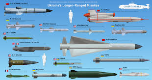
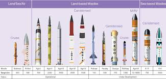
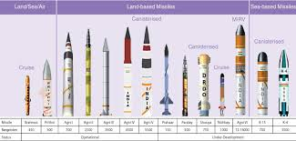

Explore our collection of interactive experiences and digital designs


Operation Blue Star (1984): A military operation to remove militant Sikh separatists from the Golden Temple in Amritsar.
Operation Trident (1971): A naval operation against Karachi during the Indo-Pakistani War of 1971.
Operation Pawan (1987): An operation by the Indian Peace Keeping Force in Sri Lanka.
Operation Vijay (1999): The Indian Army's successful campaign to push back Pakistani forces in the Kargil War.
Operation Black Tornado (2008): Carried out to neutralize militants during the 2008 Mumbai attacks.
Operation Ganga (2022): The evacuation of Indian citizens from Ukraine during the Russian invasion.
Operation Kaveri (2023): Evacuation of Indian citizens from Sudan.
Operation Dost (2023): Humanitarian assistance and disaster relief to Turkey and Syria following earthquakes.
Equipment and modernization
Delayed modernization: A large percentage of old equipment remains in use due to delayed acquisition and modernization projects.
Budgetary constraints: A lack of capital budget for new equipment, particularly large-scale procurement, is a significant problem.
Ammunition shortages: Quality issues with indigenous ammunition production and inadequate budgetary support have led to a hollowness in arms and ammunition.
Technological gaps: There is a need to develop expertise in areas like AI, machine learning, quantum computing, and drone technology to stay current with modern warfare.
{Threats and strategy}Hybrid warfare: Armies must confront a combination of traditional rivalries, terrorism, proxy wars, and disinformation campaigns.
Non-kinetic threats: The nature of conflict is shifting towards non-kinetic and non-contact warfare, requiring a new approach.
Two-front situation: Some armies face a two-front threat, with potential conflicts on two different borders, complicated by internal security challenges.
Out-of-area contingencies: The need to operate in different regions for tasks like evacuation or safeguarding national interests is growing.
solutions: The military power solutions market includes companies that provide power solutions like batteries and generators for military applications.
{Other solutions}Safety and IT services: Some local businesses, such as "Fire Army Safety Solutions" in Bangalore or "Army Computers & Mobiles Solutions" in Delhi, provide services like safety equipment or computer repair.
{Core principles}
Objective: Ensure every operation is aimed at a single, clear, and attainable objective.
Offensive: Seize and maintain the initiative to dictate the pace and direction of the fight.
Mass: Concentrate combat power at the decisive time and place to overwhelm the enemy.
Maneuver: Place the enemy in a disadvantageous position through the flexible application of combat power.
Unity of Command: Ensure all efforts are directed by a single, responsible commander.
Security: Prevent the enemy from gaining an unexpected advantage.
Surprise: Strike the enemy in an unexpected time, place, or manner.
Simplicity: Create clear, uncomplicated plans and orders.
{Common tactical approaches}Defeat in Detail: Concentrate overwhelming force against a smaller portion of the enemy's force, breaking them down piece by piece. This can be achieved by avoiding a full-front attack and instead focusing on a weak point in the enemy's formation.
Pincer Movement: Attack the enemy from two opposite sides to cut them off from retreat and support.
Attrition Warfare: Gradually wear down the enemy through continuous losses of personnel, equipment, and morale. This strategy is effective against a superior force or when seeking to inflict a costly victory.
Penetration: Use elite troops to create a breach in the enemy's center and then have reserves exploit that gap. This often involves using flanks to pin the enemy, draw in their reserves, and then hitting their now-weakened center.
Bull Horn Formation: Attack the enemy's flanks and front simultaneously (three points of attack) to cut off any retreat or support.
Scorched Earth: A strategy of destroying everything that could be of value to the enemy, such as food, water, and infrastructure. Its use against civilians is prohibited by international law.


{Military and security operations}
Warfare: Conducted major operations during conflicts such as the Indo-Pakistani War of 1971 (Operations Trident and Python) and the Kargil War in 1999 (Operation Talwar).
Maritime Security: Maintains a constant presence for maritime security operations, including a focus on the Gulf of Aden and surrounding areas.
Anti-piracy: Engages in anti-piracy operations, as seen in the past with operations in Somalia.
Surveillance and Patrol: Carries out extensive surveillance of maritime borders and patrols to safeguard national interests.
{Humanitarian and disaster relief operations}Natural Disaster Relief: Launches major rescue and relief operations during natural disasters, such as the Kerala floods in 2018 (Operation Madad) and response efforts during cyclones like Jawad and Gulab.
Evacuations: Conducts operations to evacuate Indian citizens from conflict zones or natural disaster areas, such as rescuing citizens from Socotra during Cyclone Mekunu (Operation Nistar).
International Disaster Response: Participates in international relief efforts, such as those following the 2004 Indian Ocean earthquake (e.g., Operation Madath, Operation Rahat-II).
{Diplomatic and constabulary operations}Joint Exercises: Participates in various bilateral exercises with other navies to foster cooperation and interoperability.
Port Visits: Undertakes port calls to foreign countries for diplomatic engagements and to deepen maritime ties.
Law Enforcement: Carries out operations to combat illegal activities at sea, such as seizing narcotics.
{Strategic and geopolitical challenges}
Geopolitical shifts: Navies must navigate a complex and changing global landscape, including rising competition in key regions like the Indian Ocean and the militarization of space.
Cyber threats: A major challenge is defending against sophisticated cyberattacks that target networks, weapon systems, and critical infrastructure, which could compromise operations and national security.
Regional security: Navies must counter threats like piracy, smuggling, and territorial disputes to ensure regional stability and protect maritime interests.
{Operational and technological challenges}Technological advancement: There is a need to quickly adopt and integrate new technologies like artificial intelligence, robotics, and unmanned vessels, while managing the transition from traditional "digitization" to "digitalization".
Resource allocation: Balancing the need for new equipment and modern systems with budget limitations is a significant challenge, especially when trying to maintain a large force.
Shipbuilding and modernization: Many navies face issues with expensive and complex systems, shipbuilding delays, and the need to modernize aging fleets while also dealing with rising costs.
{Human and logistical challenges}Manpower shortages: A shortage of both officers and sailors can strain operational capacity and impact a navy's ability to meet its missions.
Training and retention: Ensuring personnel have the training and experience needed for modern operations is critical, as is developing policies to retain skilled officers.
Logistics: Keeping personnel equipped and maintaining a high standard of readiness, including the upkeep of uniforms and equipment, presents daily challenges.
{Core principles}
Sea control: Protecting one's own shipping lanes and allowing friendly forces to operate freely in a given area.
Sea denial: Preventing an enemy from using a specific sea area, often by creating a prohibited zone through tactics like mine-laying or submarine attacks.
Attacking first: A central principle is to gain an advantage by striking first, either through superior range, maneuver, or information.
Detecting the enemy first: The "central objective" is to detect the enemy while remaining undetected yourself, creating a favorable "battlespace".
{Tactical elements}Firepower: Concentrating firepower to overwhelm the enemy, historically achieved by forming a "line of battle" and modernly through carrier groups, submarines, and long-range missiles.
Scouting and intelligence: Gaining a superior understanding of the enemy's position and intentions is as critical as firepower. This includes both detecting the enemy and denying them information about your own forces.
Maneuver: Moving forces to gain tactical advantage, such as breaking the enemy's line or concentrating force on a specific point.
Command and control (C2): The ability to coordinate and direct forces effectively, which is crucial for blending the other tactical elements into a cohesive plan
Electronic warfare: Confusing the enemy's sensors and communications to create a distorted picture of the battlefield.
Defensive tactics: While a successful defense often involves a counterattack, defensive measures like using a naval screen to destroy incoming threats before they reach the main force are crucial.
{Modern applications}Carrier strike groups: A modern example of concentrated force, comprising an aircraft carrier and supporting destroyers, cruisers, and other vessels that can "sanitize" a large area of the sea.
Submarines: Especially nuclear-powered ones, are a significant threat due to their stealth and ability to launch devastating attacks from underwater.
Autonomous systems: The integration of robotic and autonomous systems is a modern development aimed at increasing readiness and capability.
Information warfare: Strategies like feeding false information to the enemy to disrupt their decision-making are used.


Combat and military operations
Operation Safed Sagar (1999): Strategic airstrikes during the Kargil War.
Operation Vijay (1999): One of India's largest military operations.
Operation Meghdoot: The operation to secure the Siachen Glacier.
Operation Cactus (1988): A mission to thwart a coup in the Maldives.
Operation Poomalai (1987): An airlift operation to deliver aid to Sri Lanka.
Operation Pawan (1987): Airlifted the Indian Peace Keeping Force (IPKF) to Sri Lanka.
Post-Pulwama airstrikes (2019): A precision strike targeting terrorist camps across the border.
Operation Sindoor (2025): A coordinated military strike against Pakistan-based terrorist camps.
{Humanitarian and evacuation operations}Operation Ganga (2022): Evacuated Indian citizens, mainly students, from Ukraine.
Operation Kaveri (2023): Evacuated Indian citizens from Sudan.
Operation Ajay (2023): Evacuated Indian nationals from Israel and Palestine.
Operation Dost (2023): Relief operations in Turkey and Syria after an earthquake.
Operation Rahat (2013): A large-scale relief and rescue operation in Uttarakhand during the floods.
Operation Maitri (2015): Relief operations in Nepal following an earthquake.
Evacuations during natural disasters: Rescuing people during events like the 2004 tsunami, the 1999 Odisha Super Cyclone, and various floods in states like Kerala, Bihar, and Madhya Pradesh.
{Other operations}Garud Commando Force: Special operations include direct action, reconnaissance, rescue of downed pilots, and anti-hijacking.
Peacekeeping missions: Participated in the Congo Crisis in 1961.
Search and rescue: A continuous role in Search and Rescue (SAR) missions, even for foreign nationals.
{Strategic and geopolitical challenges}
The Indian Air Force (IAF) faces challenges including pilot shortages, outdated training infrastructure, and slow aircraft modernization programs. Other issues include maintenance and logistics difficulties with a diverse fleet and the need for improved strategic planning to meet evolving threats, according to DW and Defstrat. The IAF also faces a shortage of skilled professionals in advanced manufacturing, which hinders its ability to innovate and produce cutting-edge defense technology.
{Core principles}
Air Force battlefield strategy focuses on integrating advanced technology, enhancing warfighting agility, and improving joint and allied force coordination. Key elements include using agile combat employment to disperse forces, empowering Airmen with mission command, and leveraging next-generation aircraft and advanced technology like AI and space assets for faster information processing and decision-making. The goal is to maintain a warfighting advantage and ensure rapid, decisive responses.
Key strategic principles and components
Agile Combat Employment (ACE): This involves dispersing aircraft and personnel to operate effectively in contested environments, making them less vulnerable to attack.
Mission Command: Empowering Airmen to make decisions and take action with minimal delay to outpace adversaries.
Technological integration: Incorporating advanced technologies like fifth-generation fighters, next-generation stealth bombers, and AI-enabled assets to reshape the battlefield.
Joint and allied integration: Strengthening coordination with other military branches and allied nations to maximize overall effectiveness.
Enhanced situational awareness: Utilizing advanced sensors, radar, and space assets to increase speed in information processing, analysis, and decision-making.
** Resilient basing:** Developing the ability to establish and maintain operational bases in a way that can withstand and recover from attacks.
** Global strike capability:** Maintaining the ability to project power and strike targets anywhere in the world.
{Tactical considerations}Air-to-air: Maintaining speed is crucial, and pilots must use tactics like throttling back after using afterburners to achieve sharper turns.
Air-to-ground: Avoiding direct flight paths at tanks and anti-aircraft threats by approaching from wide flanks and high angles is recommended.
** Missile defense:** Paying close attention to missile lock alerts and deploying countermeasures like flares only after an "incoming" tone is heard. Utilizing terrain to break line of sight is also a key defensive tactic.


RAW conducts a wide range of operations including intelligence gathering, covert operations, and counter-terrorism to support India's foreign policy and national security. Its operations have included providing intelligence for major events like the Kargil War and the Balakot Airstrike, neutralizing terrorist groups, and supporting other government functions. The agency is also known for snatch operations, which involve capturing suspects in foreign countries for interrogation.
Indian external intelligence agency RAW faces challenges including lack of a statutory framework and parliamentary oversight, which affects transparency and accountability. Other issues include a perceived weakness in intelligence analysis compared to covert operations, accusations of political misuse, and adapting to sophisticated adversaries and changing global dynamics. The agency also faces operational challenges from diplomatic strains and rising terrorist activities in neighboring regions.
The Indian Research & Analysis Wing's (R&AW) strategy is to gather foreign intelligence, counter-terrorism, and advance India's strategic interests abroad. Its strategies include operating through third countries to collect military, economic, scientific, and political intelligence, and monitoring foreign activities that affect India, such as narco-terrorism and arms smuggling. The agency focuses on advancing India's foreign policy goals through these intelligence-gathering operations.


Handguns are designed to be held and fired with one hand.
Pistols: These typically use a detachable magazine for ammunition and feature a single firing chamber that is part of the barrel. Most modern pistols are semi-automatic, firing one round with each pull of the trigger. Examples include Glocks and the M1911.
Revolvers: These firearms feature a rotating cylinder with multiple chambers, each holding a single cartridge. They are known for their reliability and can be either single-action (hammer must be manually cocked before each shot) or double-action (trigger pull cocks and releases the hammer).
{Long Guns} Long guns are designed to be fired using both hands and are typically braced against the shoulder.Rifles: Rifles have a long barrel with spiral grooves, called rifling, in the bore. This rifling imparts a spin to the bullet, which increases accuracy over long distances. They come in various action types:
Bolt-action: Requires the user to manually manipulate a bolt to load, fire, and eject cartridges.
Lever-action: Uses a lever mechanism to cycle the action.
Pump-action: Uses a sliding forearm to cycle the action.
Semi-automatic: Fires one round per trigger pull and automatically prepares the next round to be fired.
Automatic/Assault rifles: These are selective-fire weapons, capable of firing multiple shots with a single trigger pull (fully automatic or burst fire). These are primarily for military use and are heavily regulated for civilian ownership in most jurisdictions.
Shotguns: Shotguns typically have a long, smooth bore barrel and are designed to fire a number of small lead pellets (shot) or a single large projectile (slug) in a spreading pattern. They are commonly used for hunting and sport shooting. Like rifles, they can be pump-action, semi-automatic, or double-barreled.
Carbines: These are essentially compact versions of rifles or muskets with shorter barrels, offering better maneuverability in close quarters.
{Other Categories}Machine Guns: Fully automatic firearms designed for sustained, continuous fire, primarily used in military contexts.
Submachine Guns: Lighter, more portable machine guns that fire lower-powered pistol-caliber ammunition.
Air Guns/BB Guns: These use compressed air or CO₂ to propel a projectile, rather than an explosive charge, and are often less regulated than firearms.
 


Ballistic Missiles => Agni series: A family of surface-to-surface ballistic missiles, including Agni-I, Agni-II, Agni-III, Agni-IV, and Agni-V, with varying ranges.
Prithvi series: Short-range surface-to-surface ballistic missiles, with variants like Prithvi-I and Prithvi-II.
Prahaar: A short-range tactical ballistic missile.
Shaurya: A hypersonic surface-to-surface missile. Cruise Missiles
BrahMos: A supersonic cruise missile that can be launched from land, sea, air, or submarine.
BrahMos-II: A hypersonic cruise missile.
Nirbhay: India's first indigenously produced long-range subsonic cruise missile. Surface-to-Air and Air-to-Air Missiles
Akash: A medium-range surface-to-air missile with multiple variants.
Barak 8: A long-range surface-to-air missile.
Trishul: A short-range surface-to-air missile.
Astra: An air-to-air missile.
MICA: An air-to-air missile. Anti-Tank Missiles
Nag: An advanced third-generation anti-tank missile.
Helina: An anti-tank missile, which is the helicopter-launched version of the Nag.
Amogha: An anti-tank guided missile. Other Missiles
Sagarika: A submarine-launched ballistic missile, also known as K-15.
Rudram-I: An anti-radiation missile for air-to-surface use.